Pussypedia
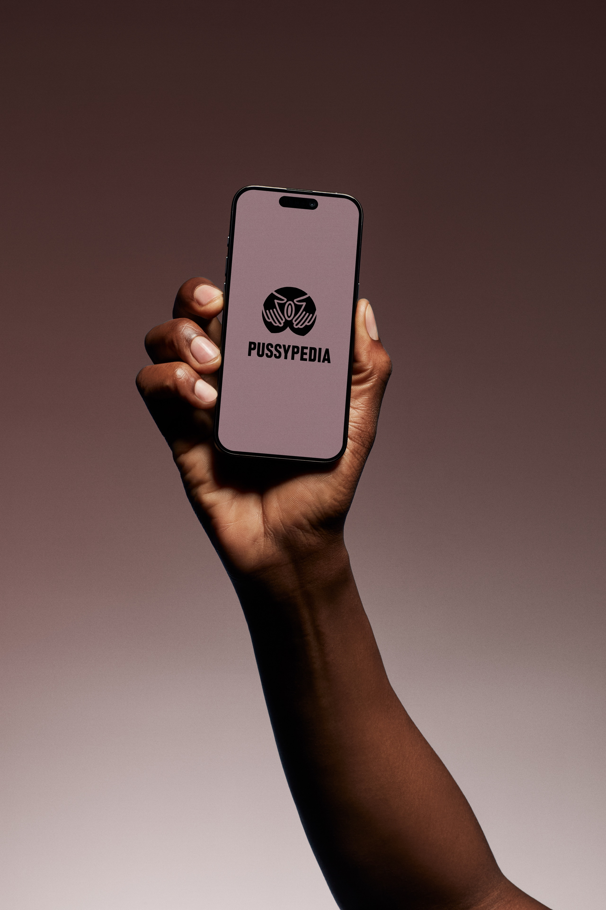
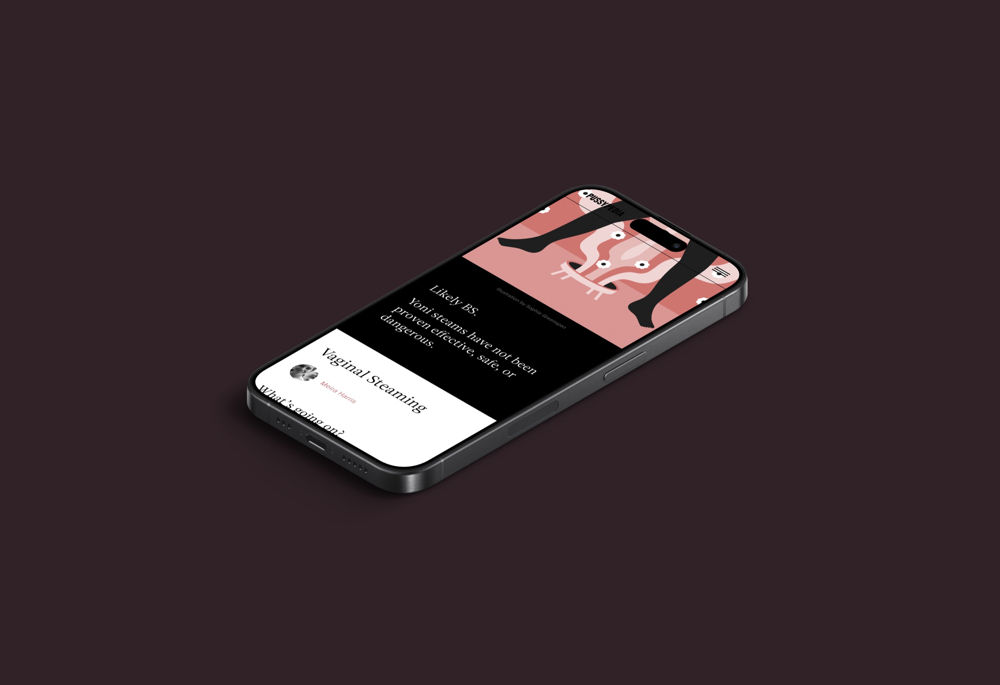
Overview
The internet lacked verified, gender-inclusive, non-shaming information about pussies.
So we, in collaboration with artist and illustrator María Conejo, made a bilingual, inclusive, joyful, highly fact-checked sexual health editorial platform.
- Site Visitors
- 1.25M
- Page Views
- 2M
- Visitor Retention
- 70%
- Kickstarter Pesos Raised
- MX$423K1
- International Press
- 160
- Instagram Followers
- 29K
“This is the women’s health resource you’ve been missing your whole life. Say goodbye to frustrating Google searches about your personal health: A woman-led team has made a website that will answer all your questions.”
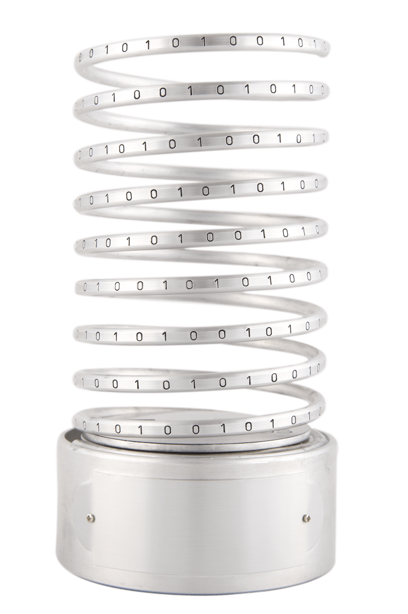
Situation
The internet lacked verified, non-shaming information about pussies.
Institutions with resources don’t often fund research about pussies. Of what little sexual health research exists, too much centers on male, cis, and heterosexual needs. Also, it is mostly inaccessible to most people. Science journals are written for scientists and locked behind paywalls.
In a vacuum of high-quality information, most of what we learn about our bodies comes from a misogynistic cultural legacy and from advertisers who capitalize on it by using shame to sell us products that often harm us.
As a result, pussies are stigmatized. People don’t know that their pussies are just fine how they are.
Ignorance and shame rob us of our agency over our bodies, our capacity to experience sexual pleasure, and too often, our self-worth. Knowledge is power. Knowledge is the tool to assert control.
We should, at the very least, have the power to control our own bodies. For that, we need a lot more access to information about them.
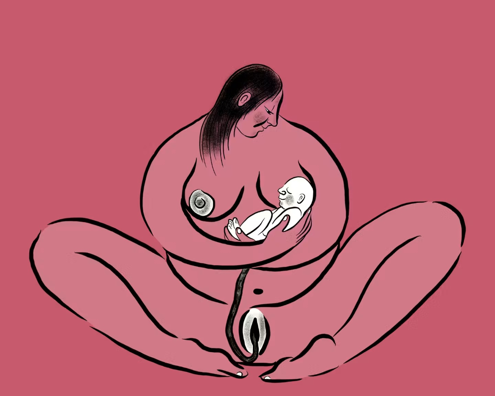
Fundraising
Complication
We applied for various grants to fund this project but were rejected for all of them—proving our hypothesis that the stigmatization of pussies leads to suppression of information about them. So we took to Kickstarter and fundraised from our own community.
Resolution
Our Kickstarter raised $423,354 pesos out of an initial $160,000 peso goal. The Kickstarter involved the designing of merch and a massive social media content campaign for which we created original content and set up key partnerships with influencers, brands, organizations, and media outlets. After the Kickstarter fee, production, and shipping of prizes, we were left with about $16,000 USD to create the site, which was still a tiny budget for our ambitious plan.
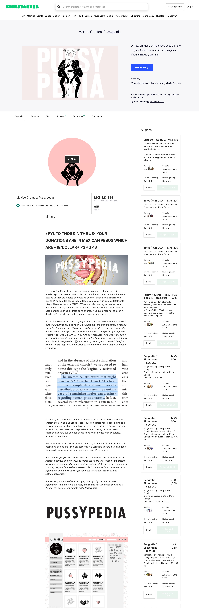
Information Architecture
Complication
We wanted to provide an accessible, intuitive reading experience that aligned with Pussypedia’s mission. We wanted people to be able to:
- Easily search a library to find specific answers
- Learn when they didn’t know they didn’t know
Resolution
For our writer’s guide, we used hypertext to create an experience where users could seamlessly navigate between articles and efficiently search the database for relevant content.
Applying principles of information architecture—the practice of organizing content to make it understandable—we first identified the key types of content that would form the foundation of the reading experience. These were the raw materials of the site, ranging from an interactive 3D model of a pussy that allows visitors to explore anatomy and function, to an outline of the core topics the publication would cover at launch.
Creating a content inventory allowed us to structure the material in a way that made sense both for the writers developing the content and for the interface that would guide readers through it. To visualize the site’s organization, we created both a content outline and a site map, ensuring the information architecture supported intuitive navigation and discoverability.
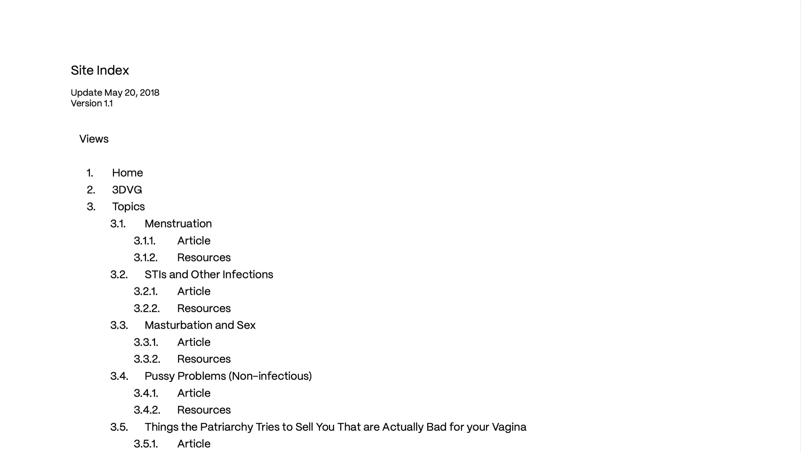
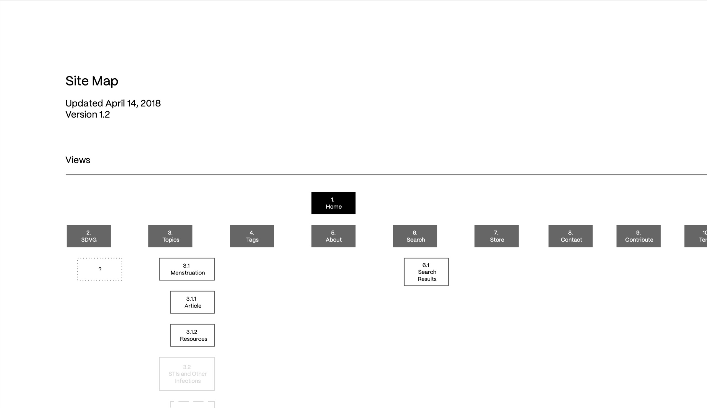
Article View
Interactive 3D Model
Interactive 3D Model
Crowd-sourced & Verified
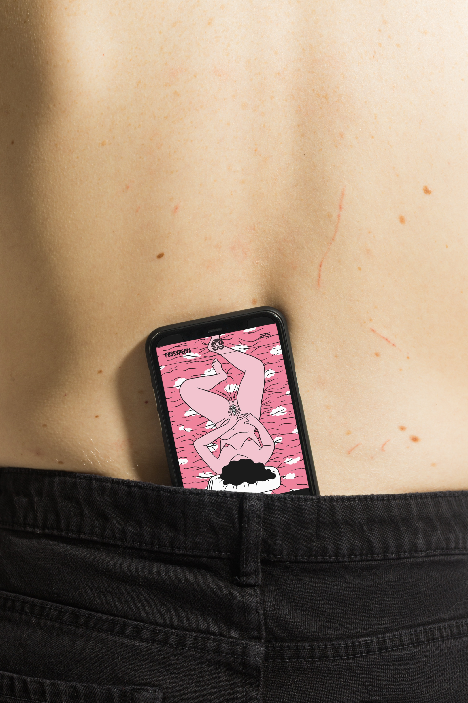
Complication
We wanted to create a crowd-sourcing system to democratize scientific literature with a rigorous fact-checking methodology.
Resolution
For our writer’s guide, we worked with a partner at Harvard T.H. Chan School of Public Health to create a series of guidelines on how to do scientific health research, how to evaluate study design to determine how much weight to give any particular scientific study while researching, and how to write science without overstating conclusions. The guide was in English and Spanish, since content was created in both languages and then translated, so translators would need the same instructions. We also created a process where writers pasted each paraphrased sentence into a comment on a Google Doc that would later be fact checked by medical professionals who could cross check sentence by sentence.
Accessibility
Complication
We wanted the platform to be accessible regardless of device or connectivity.
We hoped to serve users with varying levels of internet access, constrained by hardware limitations and regional infrastructure.
Resolution
To support this, we made intentional art direction decisions to reduce page weight for improved performance.
We featured flat-style illustrations with a limited color palette, avoiding gradients. On the web, color depth determines how many colors can be displayed in an image, directly affecting file size. Flat illustrations require lower color depth, meaning fewer bytes per pixel and smaller file sizes, improving load speeds.
Traditional editorial design—like The New York Times or Time Magazine—prioritizes dense layouts to fit as much content “above the fold” as possible. These layouts often use multiple typefaces, intricate styling, and complex grid structures, increasing the amount of style data required for rendering. We took a different approach:
- Our layouts were simple and uncluttered.
- Our typography relied only on size variations, minimizing unnecessary styles.
Small design choices like these cumulatively reduced page load times and file sizes, ensuring a faster, more efficient experience for all users.

Complication
We wanted the site to serve a larger global audience.
There was little quality information about pussies on the internet in English, but even less in Spanish.
Resolution
We made the site fully bilingual, automatically changing language based on where visitors’ IP addresses located them. All articles were translated into Spanish or written in Spanish and translated to English with a network of global volunteer translators and editors. We also built and vetted a separate resource portal for resources in Spanish. Many of the articles have also been translated into French with links posted at the bottoms of the articles as well as a partner site that published the French work.
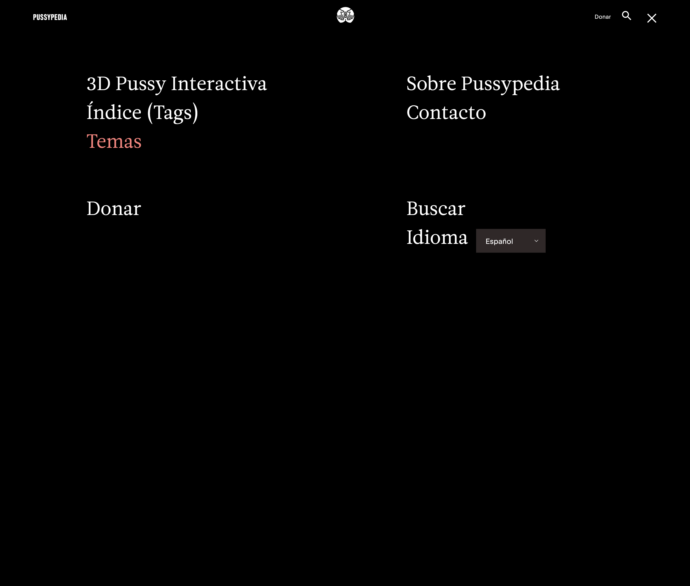
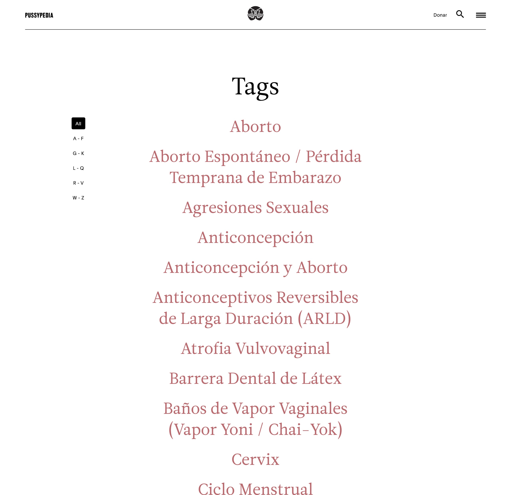
Complication
Shame as a barrier
We believe that shame is a barrier to learning. Most information about pussies on the internet uses euphemisms, overly-scientific terminology, or shaming/blaming language that makes absorbing information harder.
Resolution
We made our content as joyful and frank as possible. We used humor, slang, and 2nd-person language to create warmth to help people learn without shame. We also used the illustrations to make the mood of the entire site celebratory and fun. For example, the herpes illustration is a bunch of cute little herpes in a herpes hotel.

Balancing scientific accuracy and human expression
Complication
We wanted to create a brand and editorial design that balanced scientific accuracy with human expression, reinforcing both credibility and approachability.
We wanted to choose the right typography. No matter how thoughtful the layout or how polished the interactions and imagery, if the typography of a site fails, the entire design falls apart.
Resolution
Logo
The logo originated from one of Maria’s figurative illustrations, a full-body illustration featuring intricate, delicate line work that conveyed her form. Early design studies quickly revealed a challenge: when scaled down to fit a 60px-tall navigation bar on a mobile device—especially on older, low-resolution screens—the fine details blurred into an unrecognizable shape.
To solve this, we cropped the image to focus on the pussy. This approach preserved the figurative essence of Maria’s work while simplifying the design into a graphic mark that maintained its integrity across various sizes and devices.
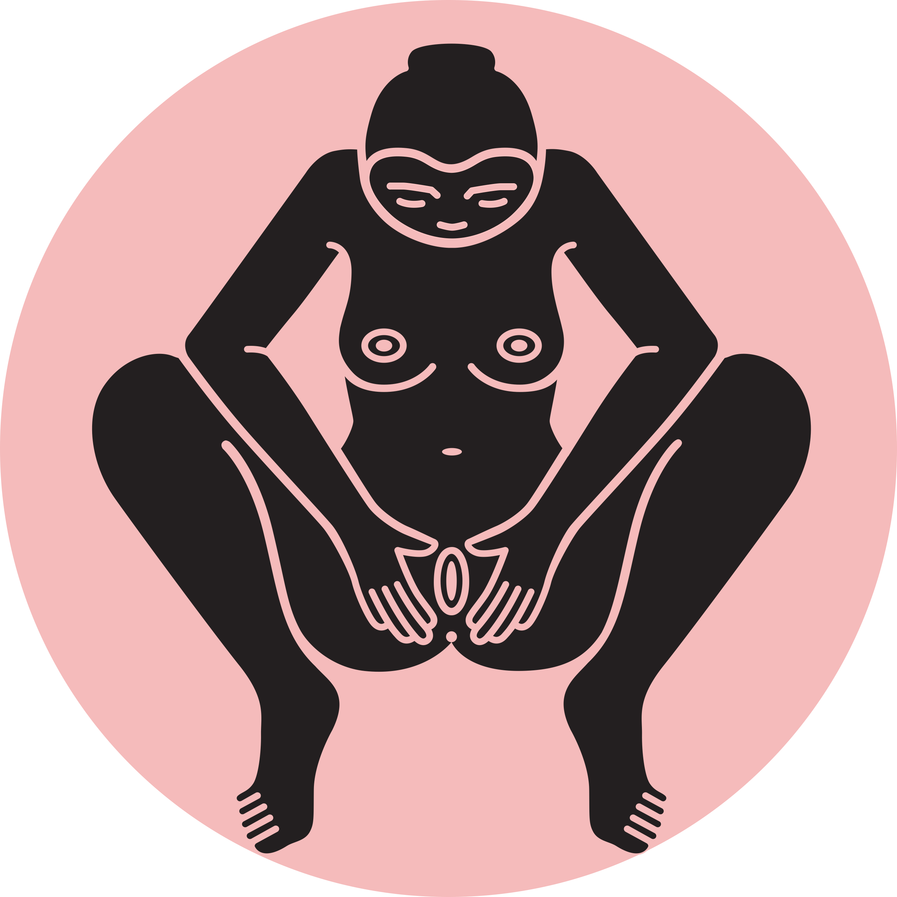
Art Direction
One of the most distinctive aspects of Pussypedia’s art direction is its exclusive use of illustrations. This approach bridges the arts and sciences while giving the publication a uniquely recognizable, joyful aesthetic. Anticipating collaborations with multiple illustrators, each with their own style, we developed a 2-rule guideline to maintain visual consistency:
- Render all linework in black or white
- Flood fields of color with a limited palette of pinks
This system ensures that every illustration, regardless of its creator, shares a cohesive look and feel—connecting articles, reinforcing the brand, and creating a seamless visual identity.
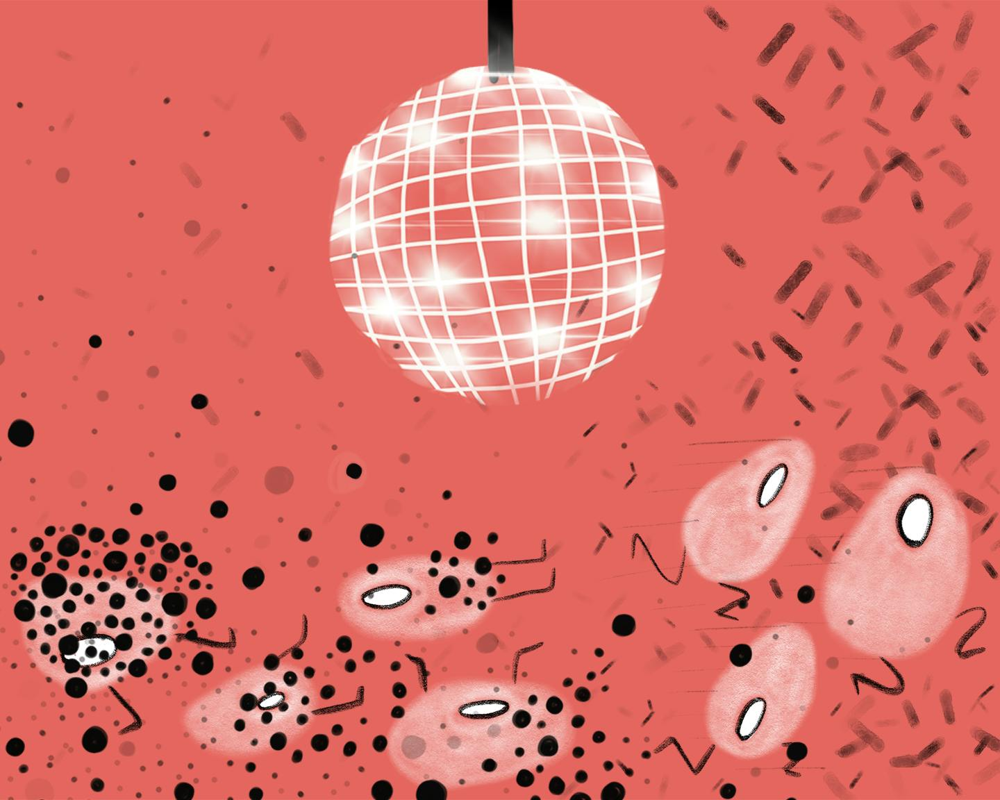
Typography
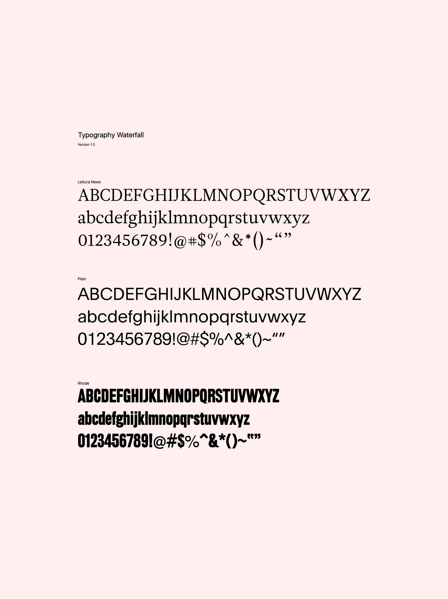
We chose Plain by the Swiss type foundry Optimo, known for its contemporary yet timeless fonts. While rooted in geometric rationality, Plain subtly breaks from strict mathematical precision, giving it an idiosyncratic, human feel. It was the perfect choice to balance the authority of peer-reviewed medical information with the expressive, figurative illustrations that accompany each article.
For running copy, we paired Plain with Leitura News from DSType. Designed specifically for news typography, Leitura News is a highly legible serif that keeps long passages of text sharp and easy to read, even at small sizes. Despite being created by different foundries, Plain and Leitura News share strikingly similar proportions—most notably, their nearly identical x-heights—making them an ideal pairing for online publishing, where text often appears side by side.
Audience Development
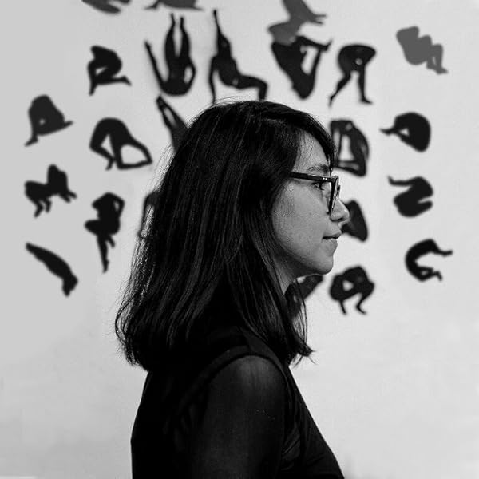
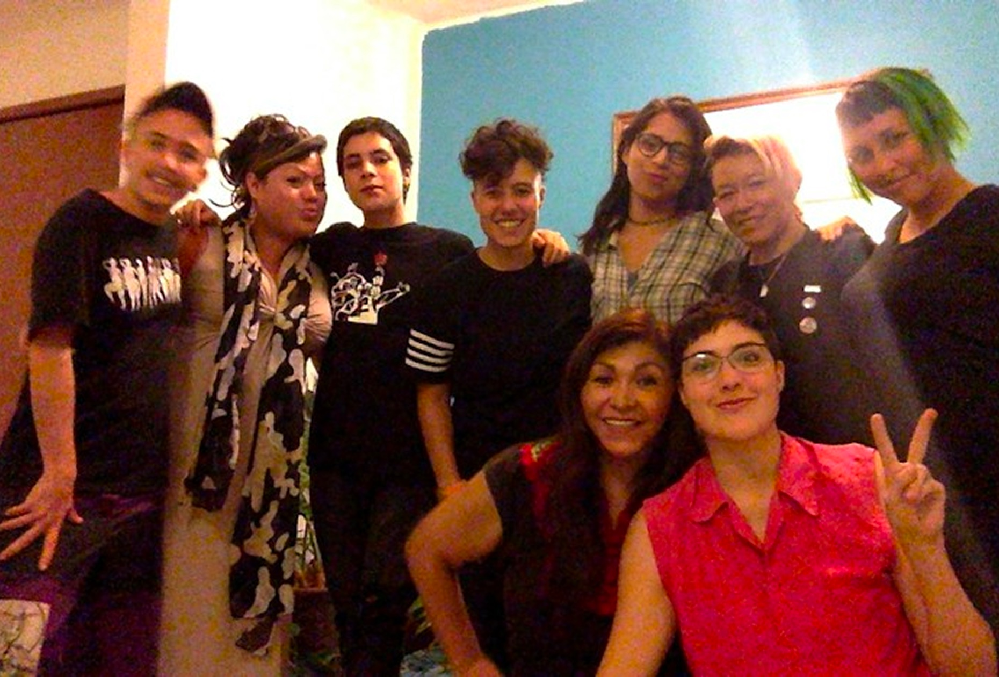
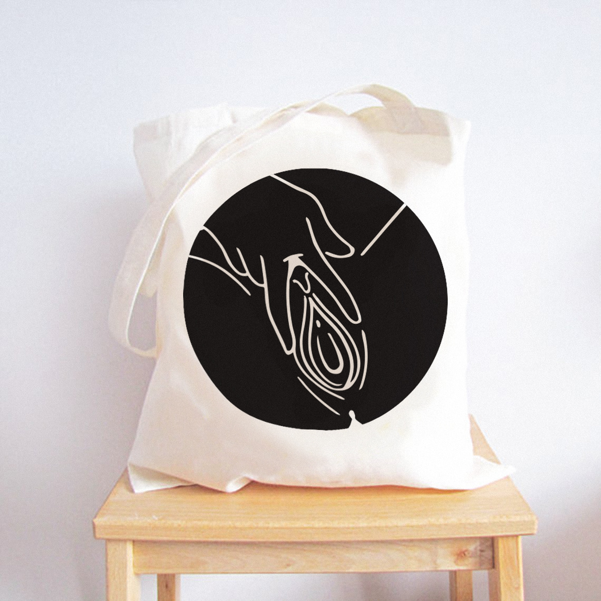
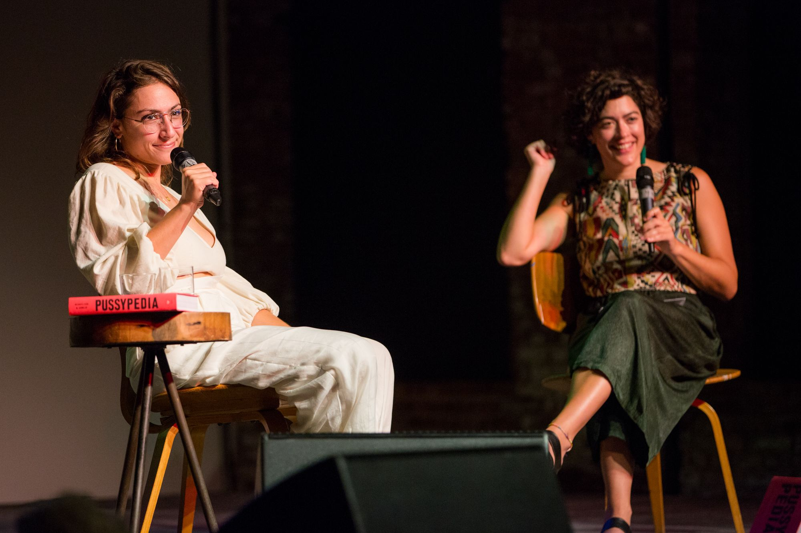
Complication
None of the creators had substantial social media followings. We were going to create an editorial platform from thin air, so we would need a big effort to get it in front of eyeballs.
Resolution
Leveraging the audience we had created through our Kickstarter and our personal networks, we staged a massive community outreach effort.
- PR Push: We did a massive round of PR, sending a press pack to hundreds of publications before launch with tailored emails pitching different aspects of the story depending on the publication.
- Social Media Strategy: We created a launch campaign with graphics, sample content, and animated videos.
- Events: We threw launch parties in Mexico City and in Chicago, partnering with big acts like Sarah Sherman of SNL, Finome, Luisa Almaguer, and Las Musas Sonideras. Both events garnered local press coverage.
- Strategic Partnerships: We partnered again with brands, organizations, influencers, and media outlets to publicize the launch.
- Community Relations: We built and leveraged a global network of writers, translators, editors, medical professionals, illustrators, and fact checkers who we also encouraged to help share Pussypedia with their networks.
Results
- Instagram Followers
- 28K
- Pieces of International Press Coverage
- 160
- Page Views
- 2M
- Visitors
- 1.25M
- Exceeding 264.60% of goal ↩